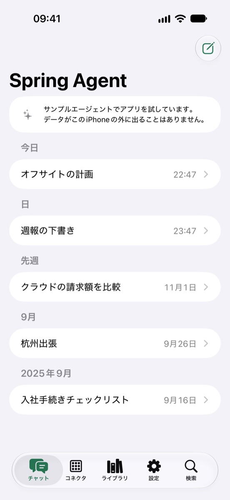
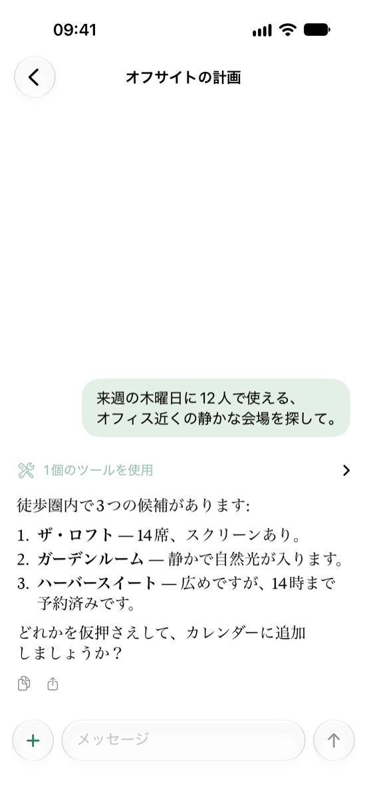
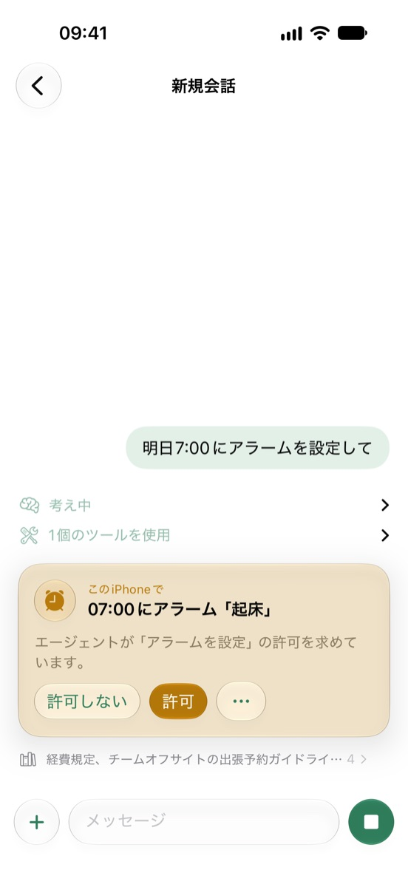
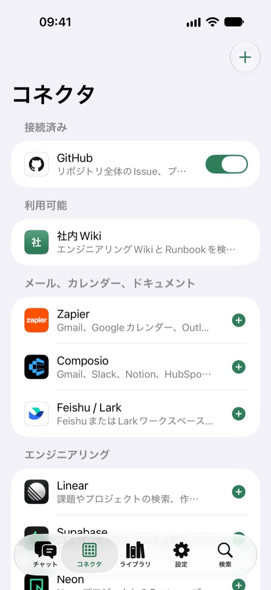
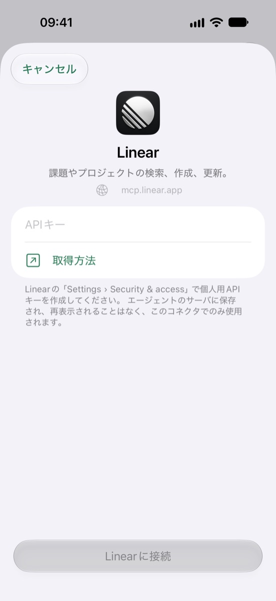
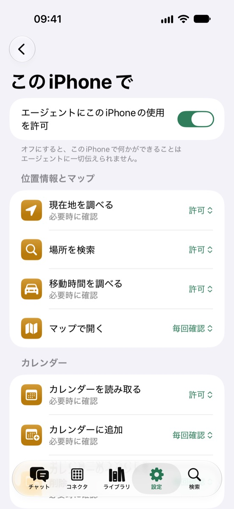
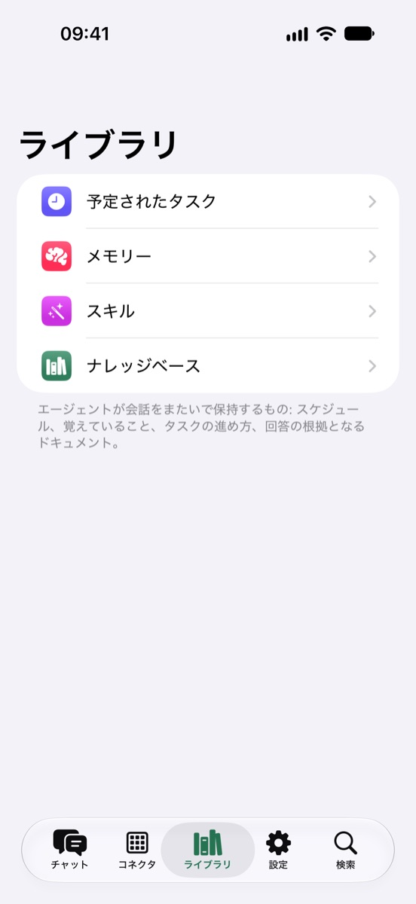
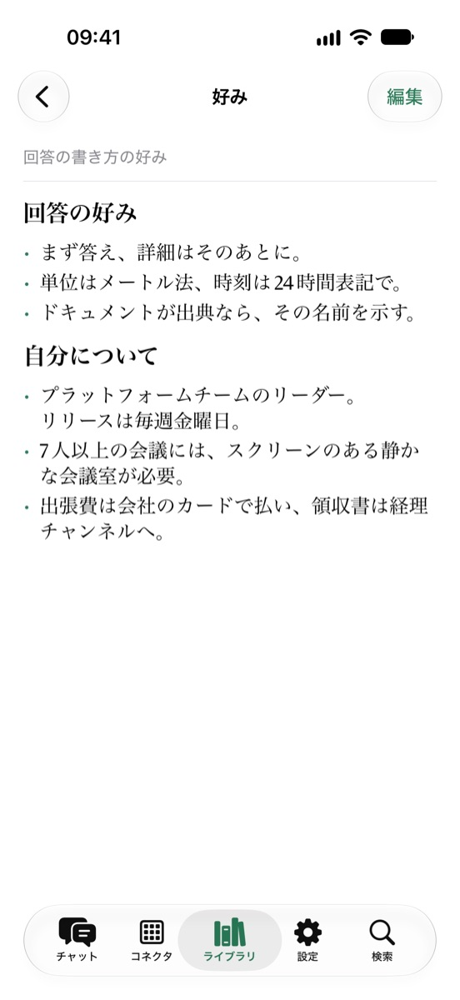

あなただけのAIエージェントを、ポケットに。
Spring Agentは、あなたが自分で運用するエージェントのためのiPhoneアプリです。エージェントとチャットし、その一つひとつのステップを追いかけ、タスクに必要なときはこのiPhoneを使わせることができます。もちろん、必ずあなたの承認のもとで。

Spring Agentは、あなたが自分で運用するエージェントのためのiPhoneアプリです。エージェントとチャットし、その一つひとつのステップを追いかけ、タスクに必要なときはこのiPhoneを使わせることができます。もちろん、必ずあなたの承認のもとで。

エージェントはあなた自身のサーバで動き続けます。アプリはそこをのぞく窓であり、タスクにこのiPhoneが必要なときは、エージェントの手にもなります。
回答はストリーミングで届きます。エージェントの思考プロセス、使用したすべてのツール、参照したソースも、タップひとつで確認できます。
位置情報、カレンダー、リマインダー、アラーム、ヘルスケア、連絡先、写真。エージェントはまずここで確認します。どこまで自由に操作してよいかは、ツールごとにあなたが決められます。
MCPを通じて、GitHub、Linear、Stripe、Zapier、Feishuなどにエージェントを接続できます。独自のMCPサーバも追加できます。
予定されたタスク、メモリー、スキル、ナレッジドキュメント。エージェントが会話をまたいで保持するものを、読んで編集できます。
アプリが通信するのは、あなたがサインインしたサーバだけです。当社のアカウントは不要で、分析やトラッキングも一切行いません。
内蔵のサンプルエージェントで、アプリのすべての機能をiPhoneの中だけで確認できます。







エージェントとの会話や、カレンダー・位置情報の読み取りは無料です。Proでは、エージェントがこのiPhone上で変更を加えたり（アラーム、イベント、リマインダー、ヘルスケアへの記録、メールやメッセージの下書き）、4つ以上のコネクタをオンにしたりできます。
1か月あたり
1年あたり。新規登録者は1週間の無料トライアル付き
表示は米国での価格です。実際の価格はApp Storeでご確認ください。サブスクリプションは、現在の期間が終了する24時間以上前に「設定」›「Apple Account」›「サブスクリプション」でキャンセルしない限り、自動的に更新されます。詳しくは利用規約（英語）をご覧ください。
ご質問、不具合の報告、アイデアは、GitHubでIssueを作成するか、contact@kezhenxu94.meまでお寄せください。自分のエージェントサーバを動かすなら、まずはSpring Agentリポジトリから。